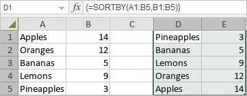

SORTBY funkcija
SORTBY funkcija je jedna od funkcija za pretraživanje i reference. Koristi se za sortiranje opsega podataka ili niza na osnovu vrednosti u odgovarajućem opsegu ili nizu.
Sintaksa
SORTBY(array, by_array, [sort_order], ...)
SORTBY funkcija ima sledeće argumente:
| Argument | Opis |
|---|---|
| array | Opseg podataka koji želite da sortirate. |
| by_array | Niz ili opseg koji se koristi za sortiranje. |
| sort_order | Opcioni argument. Broj koji određuje redosled sortiranja. Moguće vrednosti su prikazane u tabeli ispod. |
Argument sort_order može biti jedna od sledećih vrednosti:
| Numerička vrednost | Značenje |
|---|---|
| 1 ili izostavljeno | Rastući redosled (podrazumevano) |
| -1 | Opadajući redosled |
Napomene
Napomena: ovo je formula niza. Za više informacija, pročitajte članak Umetanje formula niza.
Kako primeniti SORTBY funkciju.
Primeri
Slika ispod prikazuje rezultat koji vraća SORTBY funkcija.
